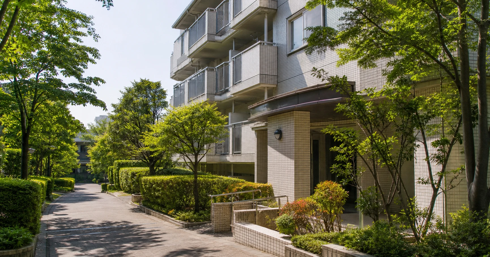
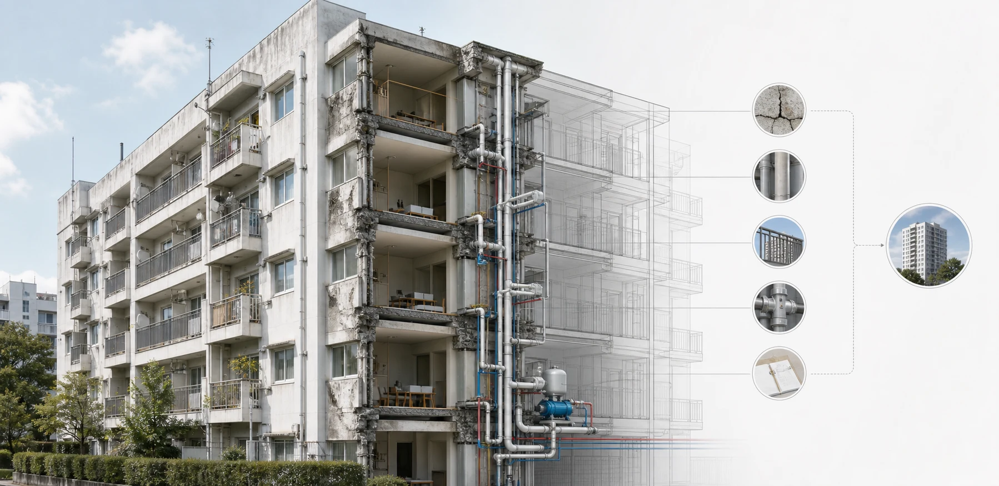
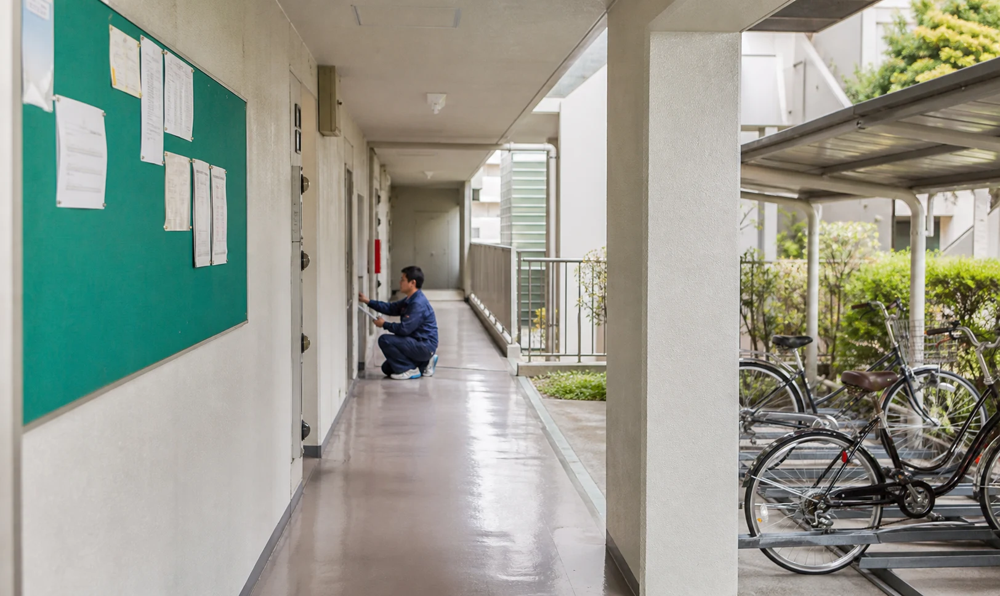

前回・第4回では「戸建ての実家じまい」をお話ししました。今回はその続き、「マンションの空き家」です。先に、この記事の芯を言っておきます。戸建ての空き家は「畳みにくい」問題ですが、マンションの空き家は「そもそも畳めない」問題です。なぜそうなるのか、公的データと一冊の本を手がかりに、できるだけ誠実に、煽らずに整理します。
1. なぜ「マンションの空き家」は、戸建てと違うのか
戸建てなら最終的には所有者の判断で売る・貸す・壊すを決められます。ところがマンションは「区分所有」――一棟の建物を大勢で分け合う仕組みです。共用部分は直すにも建替えるにも他の所有者との合意が要る。連絡がつかない所有者、相続で分散した名義もある。個人の意思だけではどうにもできないのが、マンションの空き家問題なのです。
2. 建物と住民、「二つの老い」を一緒に考える
米山秀隆さんの『限界マンション 次に来る空き家問題』（日本経済新聞出版社、2015年）は、区分所有権を"時限爆弾"と表現しました。核心は「2つの老い」――建物の老いと住民の老い。建物と人が同時に老いることで管理組合が機能しなくなり、半ば放置された「限界マンション」化がじわじわ進みます。

3. 数字で見る――築古マンションは、これから一気に増える
国土交通省の推計によると、築40年以上の分譲マンションは2022年末で約125.7万戸。20年後（2042年）には約3.5倍、約445万戸にまで増える見通しです。分譲マンションのストックは全国で約694万戸。20年後には、かなりの割合が「築40年以上」の仲間入りをするということです。
4. 直せない、壊せない――「区分所有」という時限爆弾のリアル
①お金が足りない――修繕積立金が計画に対して不足しているマンションは約36.6%。②建替えはほとんど実現しない――原則5分の4以上の賛成が必要で、1戸あたり約1000万円の追加負担も相場とされ、全国約694万戸に対し建替え実績は累計297件・約2.4万戸（国土交通省調べ、2024年4月時点）。③そして決められなくなる――空室・相続で頭数が集まらなくなる。「直すお金もない、壊す合意も取れない、決める人も集まらない」――これが限界マンションの終着点です。
5. 2026年、区分所有法が変わった――大きな前進、でも課題は残る
2026年4月1日に施行された改正区分所有法では、建替え決議要件が一定の場合に5分の4から4分の3へ緩和され、所在不明の所有者を決議の分母から除外できる仕組みが導入されました。これは長年の課題に対応する大きな前進です。決議要件が緩和されたことで、合意形成は進みやすくなりました。ただし、建替えに必要な巨額の費用そのものが消えるわけではありません。最終的には、各マンションの積立状況と合意形成が課題となります。
6. 我が事として考える――買うとき・相続するときのチェック観点
見るべきは「建物」より、まず「お金」と「人」です。①修繕積立金は足りているか②長期修繕計画があるか・更新されているか③管理状態と管理組合が生きているか。「積立金が安い＝お得」ではなく、将来の大規模修繕でお金が足りなくなる"赤信号"かもしれません。

7. 生前贈与という選択肢――戸建ても、マンションも
親のマンションを、相続を待たず生きているうちに子へ贈与しておく生前贈与。一番の利点は、親が元気で判断能力があるうちにしか実行できないという点にあります。ただし登録免許税など税負担の面で不利になることや、兄弟間の公平性の問題もあります。早めに、みんなで、オープンに――これが戸建てでもマンションでも変わらない原則です。
よくある質問
「限界マンション」とは何ですか？
＋
建物の老朽化と住民の高齢化という「2つの老い」が同時に進み、空室が増え、管理組合が十分に機能せず、修繕も建替えもできないまま半ば放置されていくマンションを指します。
築40年を超えたら、もう住めないのですか？
＋
いいえ。適切に修繕を重ねれば、それ以上長く住めます。問題は「適切な修繕を続けられるか」で、鍵は修繕積立金と管理組合の状態です。
古くなったら建替えればいいのでは？
＋
現実には非常に難しいです。原則5分の4以上の合意が必要で、1戸あたり約1000万円規模の追加負担も生じます。建替え実績は累計297件・約2.4万戸にとどまります。
2026年の区分所有法改正で、問題は解決しますか？
＋
2026年4月に施行され、建替えの決議要件が緩和されたことで、合意形成の前進が期待されます。ただし建替えの費用問題そのものは残るため、最終的には各マンションの積立状況と合意形成が課題となります。
マンションを買うとき・相続するとき、何を見ればいいですか？
＋
「建物」より先に「お金」と「人」です。修繕積立金が計画に対して不足していないか、長期修繕計画が更新されているか、管理組合が機能しているか。
生前贈与と相続、どちらがいいですか？
＋
一概には言えません。生前贈与は親が元気なうちに確実に引き継げる利点がある一方、税負担や兄弟間の公平性の懸念があります。専門家への相談をおすすめします。
出典・参考資料を見る
- 総務省統計局「令和5年住宅・土地統計調査」
- 米山秀隆『限界マンション 次に来る空き家問題』（日本経済新聞出版社、2015年）
- 牧野知弘『2020年マンション大崩壊』（文春新書、2015年）
- 国土交通省「マンションに関する統計・データ等」／分譲マンションストック戸数（2024年末）
- 国土交通省「令和5年度マンション総合調査」

この記事を書いた人｜エイスケ
1986年生まれ、40歳。実家の建築業・不動産に10年間従事したのち、教育の世界へ。住宅と教育、両方のプロの視点から「豊かな暮らし」をテーマに忖度なく切り込みます。※本コラムは筆者個人の見解・経験に基づくものです。最終的な判断は各分野の専門家にご相談ください。